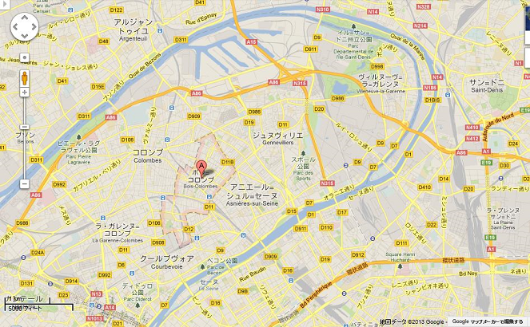
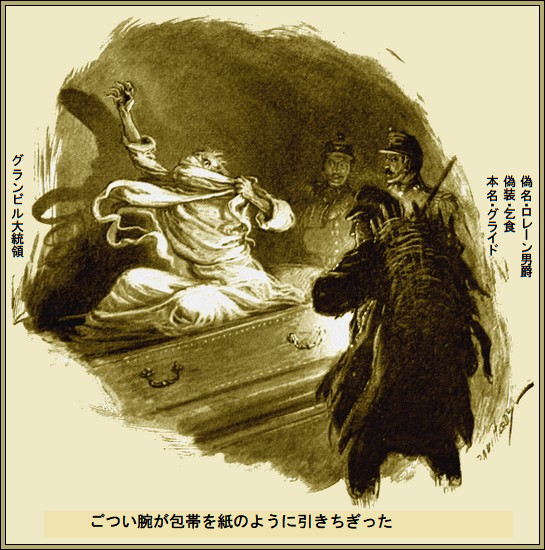

第一章
「ムッシュ、この書類ですが、この眼の前の書類で、私が嘘つきか分かります。ああ、出来れば自分で使いたかった」
「つまりそうしないということか」
とフィリックス・グライドが
対面の小柄で陽気なフランス人が、ひきつり笑いした。ジュール・ファルビは決して悪相じゃないし、応対も良く、言葉も上品だが、でもほら、目の肥えたグライドにかかれば、囚人の影がばればれだった。
しばらくグライドが
仕事が込み入っているため、ここへ来ている。どでかい新しいことをやろうと、いま石橋の中央に
階下のブア地区が陽気に華やいでいる。二十五年間、パリがこんなにきらめいたことはない。
というのも今年は大博覧会があり、そのすごさは世界屈指であり、一、二週間以内に共和国大統領が開会を宣言する予定だ。大方の見積もりでは、裕福な観光客が百万人以上パリに来る。

グライドが窓から離れてニヤリ。頭から爪先まで黒一色で
青白い顔と、分厚い黒の
人々はロレーン男爵が何者か、パリで何をしているのか、いぶかった。
「なんで、自分でグランビル大統領に当らないんだ」
とロレーン男爵が
「とんでもない。男爵、わたしは前科持ちで……」
とファルベが嘆いた。
「ツーロン監獄と全く関係ないこともないだろ」
「誰が男爵に教えたんですか」
「気にするな、キミはムショ帰りだろ。何年も前の話だし、それから問題は起こしてない。ほかに知ってる者は？」
ファルベがこぶしでテーブルを激しくたたき、怒った。
「サツですよ。調書が……ああ。憎い。写真やら、身体測定やら、前科記録があり、逃げられない。グランビル大統領も同じ穴の
グライドがなだめた。
「みんな、どこかで過ちを起こすものだ。この書類を見れば、大統領は当世の
「全くその通りですよ。あれは二十五年前。私は下っ端でした。奴は逃げて、本当の名前を消し、三年後に偽名で現れました。一年前パリに来たら、もうびっくりです。すぐ奴だと分かりました。それからどうにか連絡を取って、知ってるぞと脅してもびくともしません。逆にこちらがつぶされかねません。なぜだかわかりますか」
「ツーロンで刑期を勤め上げず、脱獄したからだろ」
「当りです。すごい。見つかったら刑期の残りを勤めねばなりません。あなたにこの証文を渡しますから、見つかっても、もう証拠はありません。しかしなぜ私に近づいて、前科をおっしゃるんで？」
グライドがあっけらかんと言った。
「言おう。偶然手がかりをつかんだ。あとは単なる金融将棋のお遊びだ。キミには棋盤と陣地はあるが、いかさまをやる度胸はない。俺ならやれる。キミは文無しの貧乏だが、アイデアを持ってるから、アメリカで成功するかもしれない。金さえあればだがね。そこでだ、この証文に五万フラン出そうじゃないか。そうすればすぐアメリカへ行ける」
ファルベが両肩をすくめて言った。
「まったくあなた次第です」
グライドが冷静に応じた。
「わかった。とびきりの面倒をみるぞ。破格の条件を出そう。さあ、渡航費用だ。すぐに出発できる。英国へ渡り、リバプールへ行って、そこでルカニア号に乗船し、次の木曜日にはニューヨークだ。出港前に電報をくれ。ニューヨークに着いたら、国立銀行へ行って、この銀行信用状を渡せば、現金に交換してくれる」
ジュール・ファルベが取引に大満足して退出した。
次の二、三日グライドは何もすることがなく、じっと成り行きを待った。約束通り、ファルベが電報をよこした。ホッと安堵して、帽子をかぶり外出した。
パリはわくわく感で
ほんの数時間前まで、そんな奇怪な事態は前兆すらなかった。いま、どの壁や掲示板にも、不思議な息吹が
何千という巨大ポスターがパリを真正面から見つめている。あまりに巨大で
いくら頭をひねっても、物好きなパリジャンといえども、それ以上分からなかった。新薬か、特許
グライドが一人ほくそ笑みながらポスターを通り過ぎると、人々が口をあんぐり開けて囲んでいる。
グライドはユーロパ広場へ行く途中だ。ご存知のボース地区に近く、保険業者と仲介業者が集まる一角である。やがて、とある事務所にはいり、責任者に会った。
グライドが手短に挨拶した。
「ロレーン男爵と申します」
モレンス所長が歓待した。
「あ、どうも。手紙は拝見しました。保険業者と致しましては何でも対応します。保険をかけたいものは何でしょう」
「実はだな、かけたいのはグランビル大統領の生命保険なんだ」
「確かに、変わってますね」
「いやいや、モレンス所長。英国では国家元首にしばしば保険を掛ける。
「もちろん引き受けますよ。だって正当な取引ですから。同類の保険料は六パーセントです。で、保険金額は」
「三百万フランだ」
「男爵、ご冗談でしょう」
「私は冗談を言わぬ。このような大きなリスク商品は君たち相互に引き受けるのだろ」
とグライドが事務的に応じた。
「個人で見せ物を計画されているそうですが」
とモレンス所長が笑顔で探りを入れた。
「その通り。皆と同じように君もエロス・ポスターを見て、興奮しただろう。実はあの責任者は私だ。あのエロスこそ前代未聞の度肝を抜く特別な見せ物だ。大博覧会が、そっちのけになっても不思議じゃない。何百万という人々が素晴らしいものを見る。その準備に一財産を使った。今日、帝国劇場を三か月間押さえた。成功は我が手中にあるが、もし大統領に不測の事態があれば、破産だ。パリ中が何カ月も
モレンス所長が深くうなずいた。グライドの言い分はちゃんと筋が通っていた。
「よくわかりました。今日遅くいらしていただければ、契約の用意をしておきます。もちろん現金取引ですよ」
「いかにも。万が一不幸が起こったら、保険金は即時払いだ。保険料の小切手を切る頃には、もう始めなくちゃ。やがてエロスが世の中をびっくりさせるぞ」
モレンス所長はあわててこの件をグライドに再確認した。その日の遅く高額小切手が全額換金され、保険証書が渡された。
＊
ほぼ真夜中のこと、大統領は一日の長い勤めに疲れていたが、まだ休めず、執務室でたった一人起きていた。指先に吸いかけの煙草が半分残っている。灰色の長い口髭を引っ張りながら、部屋をせかせか歩き回っていた。いつもは落ち着いた態度も、不安と心配に揺れている。
「やつは何で来ないんだ」
とブツブツ。
数分後、電磁ベルがジジジと鳴った。グランビル大統領が広い大理石玄関を横切って、扉を開けた。明かりに照らされたのは、顔に傷のある黒い鼻づらのロレーン男爵だった。
「閣下、遅れて申し訳ございません」
「遅すぎるぞ、入りたまえ、入りたまえ」
グライドは威張りくさった男のあとについて豪華な居間に入り、用心して扉を閉めた。勧められる前に、椅子にどっかと座り、心配顔の大統領に向き合った。
「ここへ来たわけはご存知でしょう」
グランビル大統領がしわがれ声で吠えた。
「知らないわけがないだろ。君の手紙からピンと来た。私の恥ずべき秘密を持ってるな。君の持っている証拠書類がたった一枚あれば、私の政治生命は終わる。もう一人いるけど、ふん、奴は腰ぬけだ。どうれ、証拠書類を」
グライドが一束の書類をテーブルに置いた。
「これは写しです。
半時間、大統領が目視で読んだ。唇が震え、顔に真っ青な死相が現れた。
「降参だよ。完全にキミ次第だな。いくらだ」
「誤解されていますね。お金なんか一銭も欲しくありません。閣下、ざっくばらんに申し上げてよろしいですか」
「かまわん。遠慮なく云いたまえ」
「ありがとうございます。まず、閣下の想像以上に閣下のことは知っておりますよ。このマル秘資料のほかにも証拠を持っています。給料以外、閣下の収入は限られています。でも、帝政以来、大統領の地位は決して安泰じゃありません。毎日今にも失脚するかと脅えながら、資産を投資されてこられましたね。立場上独占的な情報が命令一つで得られますから、失敗なんてあり得ません。閣下はいま大きな事業を行って、数週間後には何百万フランも手になさるでしょう。反論は無用です。この証拠書類が絶対的な切り札ですから」
「君は悪魔だな」
と大統領がうめいた。
グライドが冷笑した。
「貧乏神ですかな。でも絶対に危害は加えませんから。私の口の堅さといったら金じゃ買えませんよ。私はいま莫大な利益を
「何はさておき、命は惜しいからな」
「とにかく何も失いません。絶対に危険はありません。おまけに八日間の休みが取れます。大統領の素晴らしい勇気と決断は証明済みです。協力願えますか」
「わかった。全て話してくれ。こんなひどいことは終わらせよう」
グライドが近寄って、一〇分間大統領の耳元に早口でささやいた。後者の顔には驚きと不信が
「そんな馬鹿な話は聞いたことがない、茶番以上だ。だが、その方法なら安全なようだ」
「絶対安全ですよ。私が喜劇で大儲けすると
「それで、八日間は」
「必要なことはすべてスタッフが手配済みです。二十四時間あれば、私が申し上げたことは充分できるし、何なりとご命令は残せます。時期が来たら、誰かが来て、警報を鳴らし、助けを呼びます」
「その誰かとは、本当に信用できるのか」
グライドがそっけなく、
「ええ、だって私ですから」
大統領が立ち上がった。老眼が闘争心でメラメラだ。グライドの片手をつかみ、ぎゅっと握った。
「やるよ、早ければ早いほどいい。この書類はあした廃棄してくれるだろうな。同じ時刻にここに持ってくるのは……」
グライドがうなずき、完全に了承し、立ち上がり、退出した。人通りのない月明かりをホテルへ帰る道すがら、噂のエロス・ポスターを横目に、奇妙な笑いを浮かべ、つぶやいた。
「すごい。一枚あたり二千倍になる。こんな大儲けをする画商なんていないな」
＊
翌晩遅く、大統領官邸でフィリックス・グライドが扉を閉めて退出すると、ガリア連邦共和国大統領はゆっくりと自室に行った。
大統領が衣服を脱ぎ、ポケットから小瓶を取り出しコルクを抜いた。それから赤々と燃えている暖炉の火を
「ちくしょう、やりやがったな、あのやろう……」
歯がガタガタ、まるで拳銃の早打ちだ。閃光が両眼に点滅し、息絶えて静かになった。
第二章
パリが目覚めた翌朝は、華やかなうきうき気分が感じられた。大博覧会が公園で開催される。大統領が臨席され、パリに歓楽の日々を宣言する。
十一時頃、主な並木道沿いにあるカフェやレストランは人々でごった返した。心配とか不安は当分ない。何千人もの瞳が明るく輝いていた。そのとき、どうやら手品で、全てが一変したようだ。
不穏なうわさが走った。何か破滅的なことが起こった。不確かだが、大統領の名前を口々に話している。新聞売り子が大勢繰り出し、辺りを大声でつんざいた。
「大統領死亡、大統領急死、号外」
新聞にドッと群がった。グライドが争って、グローブ・カフェの店先で一部つかんだ。ほかの誰より冷静に読んだ。
『グランビル大統領、突然死』
同大統領が、今朝寝室で死亡しているのが発見された。死因は心臓病。
深い哀悼 と大きな悲しみで大統領閣下の急死を報じなければならない。現在までに分かった情報によれば、モーリス侍従が今朝七時に起こしに行ったところ、共和国大統領が就寝中安らかに死亡しているのを発見してびっくり仰天した。
後で得られた情報では、突然死の兆候がないでもない。仄聞 するところ、同閣下が最近二、三回発作を起こし、そのあと死んだように昏睡した由 。さらなる詳細は次号で。
同大統領が、今朝寝室で死亡しているのが発見された。死因は心臓病。
深い
後で得られた情報では、突然死の兆候がないでもない。
あっという間にパリは
大統領がひどく恐れたのは生き埋めにされることだった。遺書の指示は、穴を開けた
グライドが記事を詳細に読んだ。どの紙面も悲嘆と悲痛に満ちている。グランビル大統領の葬式は見せ物としても、記録的なものになりそうだった。
当然予想されるように、この悲劇的な事件によって、少なくとも当分博覧会は事実上中止になる。商売的には、参加商人の多くが大損する。多くの施設が閉鎖され、劇場は空っぽ、博覧会会場は
しかしグライドは少しも落胆している風に見えなかった。むしろ忘れ去られた方が都合よかった。一見物人として故大統領の葬式に参列した。おそらく群衆の中で唯一、壮麗な葬列を冷静に眺めた人物だったろう。
翌日、あちこちの店が店を開け、商売を再開した。だが多くの状況から、大博覧会は大失敗する運命となった。グライドは時間を置かず保険業者のモレンス所長を訪ねた。
モレンス所長が
「お待ちしておりました」
とモレンス所長がため息まじりに言った。
「そうか。土曜日の朝に契約は成立したと思うが」
とグライドが事務的に応じた。
「あ、はい。保険証書の件はきちんと支払います。仲間と相談せねばなりませんが。ご承知のようにあんなリスクは一人で引き受けません。何十人もの仲間が大損害です」
「これも武運ですな」
とグライドが応じた。
モレンス所長が、ぼやいた。
「いや、愚痴を言ってるのじゃありません。保険金が入っても、パリの人々はあなたの豪華芝居は見ないでしょう」
グライドが煙草をプカーと吹かしながらうそぶいた。
「まあ、そうでしょうな。フランス人は浮気性だから、二、三日で忘れる。とにかく数週間ここに居座って、様子を見るさ。私の興業はこの祭典期間以外、やるつもりはないよ」
「私と仲間に保険金を請求しても、心は痛みませんか」
グライドは冷酷に返事して別れた。まさに時刻を
金を受け取るが早いか、密かに開設したシェバリエ・ロレーン名義の口座に振り込んだ。同口座から、ヨーロッパの各都で小切手が使える。小切手がすべて処理される頃には金の行方は全く分からなくなる。
そういうことだから、想像されることは、グライドが目的を達し、幸運が舞い込んだおかげで、当分快楽をむさぼることだろう。
しかしなすべきことがいくつかあった。日曜が明けて晴天になり、パリにやや生気が戻ったものの、並木道は沈んでいるようだった。グライドは目もくれなかった。というのも、同日午後の全部、それに夕方遅くまで、もの書きで忙しかったからだ。
もう夜だ。部屋は妙に静かだった。それもそのはず、使用人を全員、口実を設けて暇を取らせたからだ。満足げにペンを置いた。
「さてと、金は報道界へ寄付する。まったくもって、新聞界の人間は私に大いに感謝すべきだ。だが今までもろもろ引き起こした衝撃事件の中でも、今夜の芝居に立ち会う記者が一人でもいるのかなあ」
グライドが扉を閉めた。そして金庫から奇抜というか、ちょっと不気味な変装具を取りだした。少し経って、パリ特有の
その格好でグライドはマラタン墓地へ急いだ。墓地へ着くと、グランビル大統領の遺体が安置されている埋葬室に向かった。周りの草が踏みにじられ、色あせた献花がこんもり
誰もいなかった。かがんで耳を澄ました。そのとき、きっと結んだ唇がにやり。直後、死の静寂をつんざくおそろしい恐怖の叫び声が響き渡った。
グライドの方へ足音が近づいてきた。暗がりからヌーッと一人か二人、
「おまえ、気違いか」
グライドが絞り出すように言った。
「違う、違う。埋葬室に誰かいる。献花に来たら、ノック音がした。聞け」
片方の勇敢な男が冷静になった。
蓋をずらすと、何か青白く透明で、ごつい腕が伸び、包帯を紙のように引きちぎり、それから恐ろしい声を上げ、幽霊のような姿で階段に突進した。

グライドが独り言。
「ああこわ、忘れたらえらいことだ。でも数時間遅れても同じだろう。大統領はそのうち回復するさ」
グライド一人が墓場を離れた。本物さながらの変装を脱ぐのはお手のものだ。
向うの通りから、形容しがたい怒鳴り声やら叫び声がした。人だかりの中に、制服姿の提督と、閣僚がおり、墓から出てきたと思われる狂人を取り押さえた。
全く偶然の出会いであった。その時、両者がハッと息をのんだ瞬間、目が合った。
ペリー提督が叫んだ。口調には苦悩と恐怖がありあり。
「なんてこった。夢か、幻か。大統領だ」
あっちこっちから声が飛んだ。グランビル大統領が仲間の腕に倒れ込み、叫んだ。
「ここから連れ出してくれ、明るい所だ。頼むから明かりをくれ。訳は聞くな。生き埋めにされた。まだ天国なんか行きたくない」
＊
秘密にする理由は何なのか、グランビル大統領は誰にも言わなかった。死んだように昏睡した奇妙な眠り薬についても何も言わない。
まる一週間、事件は
モレンス所長だけが途方に暮れた。あんなにずる賢い男爵は今までの人生で会ったことがない。保険金を受け取るのはロレーン男爵の権利だが、裁判にかける法的手段がない。
警察も居場所はつかんでいないし、見つけそうにない。何か、とんでもない詐欺にひっかかったことは確かだが、証明は……。
モレンス所長は
「三百万フランか。野郎は何か知ってたに違いない。しかし成功させるためにはおそらく大統領を共犯者にしなければならなかったろう。考える程に、人をこけにしよって」
一方のフィリックス・グライドはまだパリにいた。風のうわさに、モレンス所長がクルミを食べワインを飲みながら、いかさま取引をぼやいているとか。
了